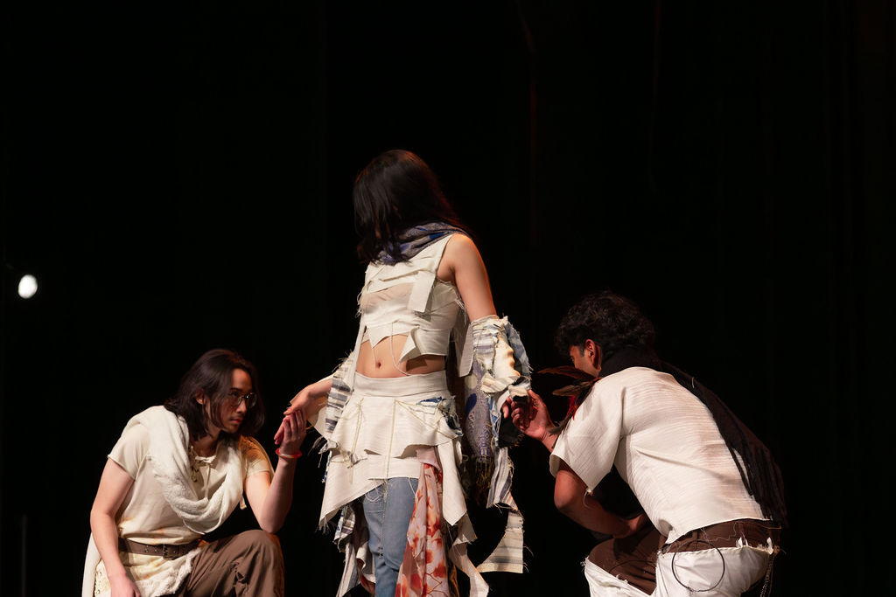
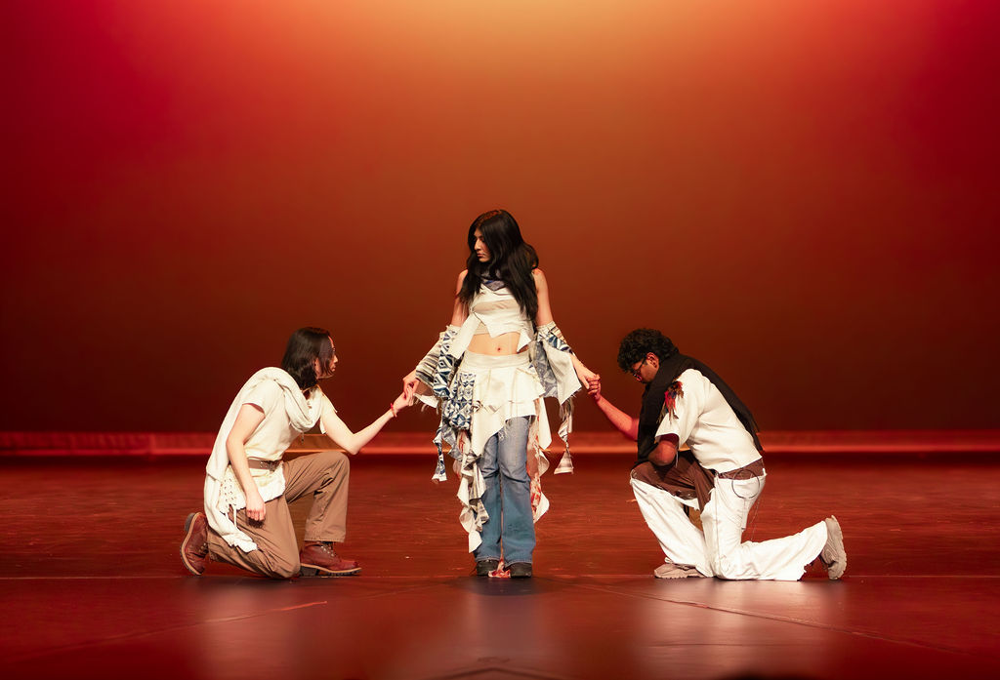
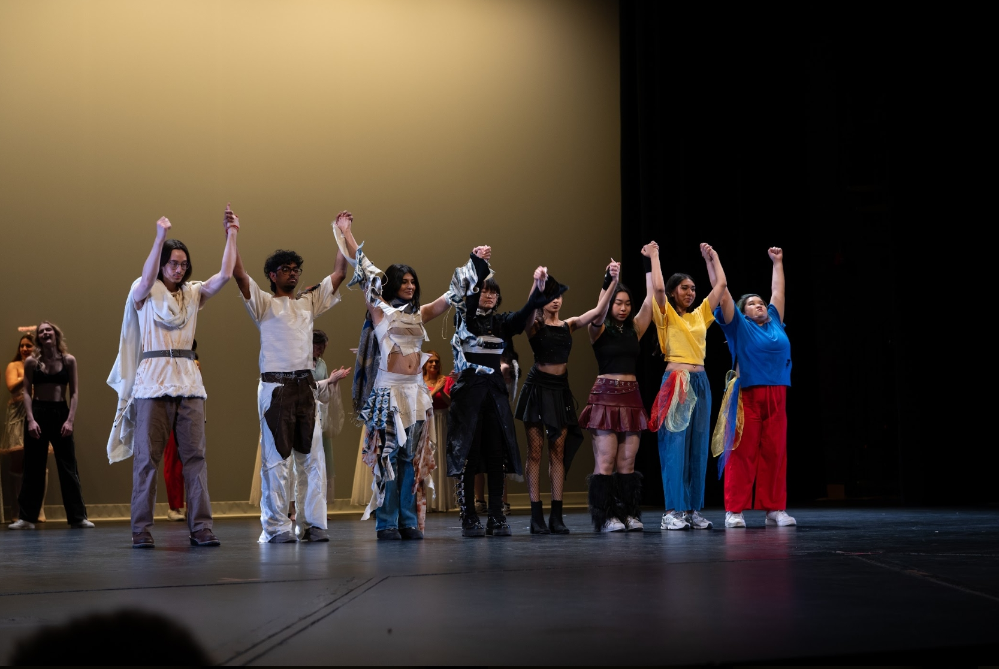

Fashion for Change
What is Fashion for Change?
Fashion for Change is a yearly fashion show put on by the students of post-secondary schools across the KW region. Each year, a new theme is chosen to be the centre of every designer's work. As well as this, every year a new charity is chosen to be supported, as all proceeds of the show go to the organization!
So what happened this year (2026)?
This year's theme was "Through the Pages", and
focused on stories throughout iconic literature
such as The Odyssey and Frankenstein. It was in
support of the Women's Crisis Service of the
Waterloo Region. We successfully raised over
$3000 to go towards the service this year.
Each designer was assigned a book to base their
designs off of, and I was given The Alchemist by
Paulo Celho. The book is crafted as a beautiful
and simple story of following one's dreams. Each
model's design takes after a key concept or character
in the book.
I'm grateful for having been assigned this book, as
after reading it as part of my research I felt a
newfound joy in my life. :)

Photo by Jimmy

Photo by Janine
And what happened last year (2025)?
Last year's theme was "The Arcana", based on the
thirteen major arcana of a standard tarot deck!
It was my first year working with Fashion for
Change, and my first direct collaboration with
another designer.
Each designer pair was given a group of arcana,
and we were assigned "Justice", "Judgement", and
"Temperance". We wanted each model to embody
one of each arcana, but two models were assigned to
each designer. This meant our scene was left with
four total. As a solution, we decided to create a
fourth "character" for a model:
"Humanity".
Since this was my first year with the show, it
didn't occur to me to document as often as I
could have. Despite this, I think of this show and
the people I worked with very fondly. I especially
enjoyed working on this year's show as the
proceeds went to oneROOF Youth Services. I've
gone through homelessness myself, so working on
a show with a direct way to make a change was
well worth it. Working on the show also brought
my creative spark back for design, during a time
when I was burning out.

2026 Gallery


